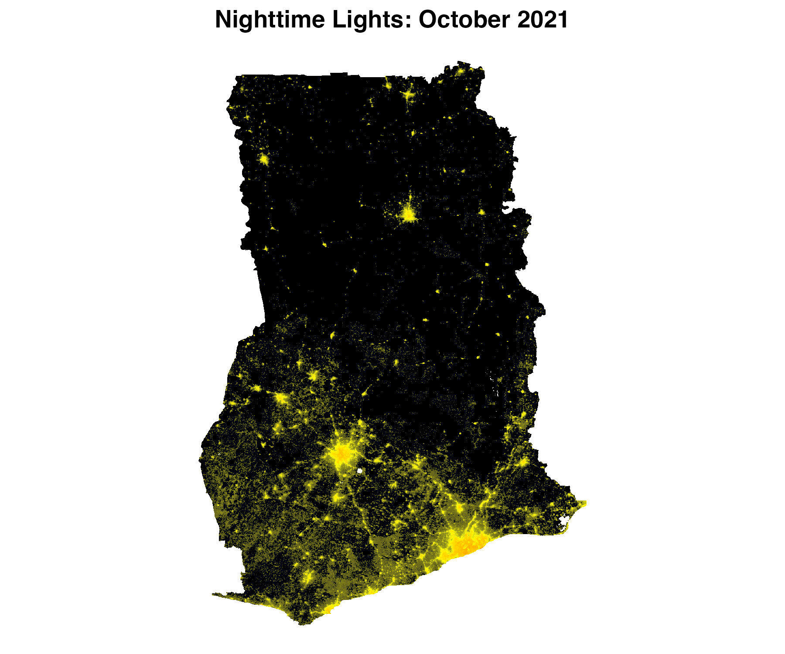

Create Georeferenced Rasters of Nighttime Lights from NASA Black Marble data.
This package facilitates downloading nighttime lights Black Marble data. Black Marble data is downloaded from the NASA LAADS Archive. The package automates the process of downloading all relevant tiles from the NASA LAADS archive to cover a region of interest, converting the raw files (in H5 format) to georeferenced rasters, and mosaicing rasters together when needed.
The package can be installed via devtools.
# install.packages("devtools")
devtools::install_github("ramarty/blackmarbler")The function requires using a Bearer Token; to obtain a token, follow the below steps:
The primary function in the package is bm_raster, which produces a raster of black marble nighttime lights. It can produce rasters from the following Black Marble products: The function takes the following arguments:
roi_sf: Region of interest; sf polygon. Must be in the WGS 84 (epsg:4326) coordinate reference system.
product_id: One of the following:
"VNP46A1": Daily (raw)"VNP46A2": Daily (corrected)"VNP46A3": Monthly"VNP46A4": Annualdate: Date of raster data. Entering one date will produce a raster. Entering multiple dates will produce a raster stack.
product_ids "VNP46A1" and "VNP46A2", a date (eg, "2021-10-03").product_id "VNP46A3", a date or year-month (e.g., "2021-10-01", where the day will be ignored, or "2021-10").product_id "VNP46A4", year or date (e.g., "2021-10-01", where the month and day will be ignored, or 2021).variable: Variable to used to create raster (default: NULL). For information on all variable choices, see here; for VNP46A1, see Table 3; for VNP46A2 see Table 6; for VNP46A3 and VNP46A4, see Table 9. If NULL, uses the following default variables:
product_id :VNP46A1", uses DNB_At_Sensor_Radiance_500m.product_id "VNP46A2", uses Gap_Filled_DNB_BRDF-Corrected_NTL.product_ids "VNP46A3" and "VNP46A4", uses NearNadir_Composite_Snow_Free.The below example shows making daily, monthly, and annual rasters of nighttime lights for Ghana.
#### Setup
# Load packages
library(blackmarbler)
library(geodata)
library(sf)
# Define NASA bearer token
bearer <- "BEARER-TOKEN-HERE"
# Define region of interest (roi). The roi must be (1) an sf polygon and (2)
# in the WGS84 (epsg:4326) coordinate reference system. Here, we use the
# getData function to load a polygon of Ghana
roi_sf <- gadm(country = "GHA", level=0, path = tempdir()) %>% st_as_sf()
#### Make Rasters
### Daily data: raster for February 5, 2021
r_20210205 <- bm_raster(roi_sf = roi_sf,
product_id = "VNP46A2",
date = "2021-02-05",
bearer = bearer)
### Monthly data: raster for October 2021
r_202110 <- bm_raster(roi_sf = roi_sf,
product_id = "VNP46A3",
date = "2021-10-01", # The day is ignored
bearer = bearer)
### Annual data: raster for 2021
r_2021 <- bm_raster(roi_sf = roi_sf,
product_id = "VNP46A4",
date = 2021,
bearer = bearer)To extract data for multiple time periods, add multiple time periods to date. The function will return a raster stack, where each raster band corresponds to a different date. The below code provides examples getting data across multiple days, months, and years.
#### Daily data in March 2021
r_daily <- bm_raster(roi_sf = roi_sf,
product_id = "VNP46A3",
date = seq.Date(from = ymd("2021-03-01"), to = ymd("2021-03-31"), by = "day"),
bearer = bearer)
#### Monthly aggregated data in 2021 and 2022
r_monthly <- bm_raster(roi_sf = roi_sf,
product_id = "VNP46A3",
date = seq.Date(from = ymd("2021-01-01"), to = ymd("2022-12-01"), by = "month"),
bearer = bearer)
#### Yearly aggregated data in 2012 and 2021
r_annual <- bm_raster(roi_sf = roi_sf,
product_id = "VNP46A4",
date = 2012:2021,
bearer = bearer)Using one of the rasters, we can make a map of nighttime lights
#### Packages
# Need ggplot for mapping
library(ggplot2)
#### Prep data
r_2021 <- r_2021 %>% mask(roi_sf)
r_df <- rasterToPoints(r_2021, spatial = TRUE) %>% as.data.frame()
names(r_df) <- c("value", "x", "y")
## Remove very low values of NTL; can be considered noise
r_df$value[r_df$value <= 2] <- 0
## Distribution is skewed, so log
r_df$value_adj <- log(r_df$value+1)
##### Map
p <- ggplot() +
geom_raster(data = r_df,
aes(x = x, y = y,
fill = value_adj)) +
scale_fill_gradient2(low = "black",
mid = "yellow",
high = "red",
midpoint = 4.5) +
labs(title = "NTL, October 2021") +
coord_quickmap() +
theme_void() +
theme(plot.title = element_text(face = "bold", hjust = 0.5),
legend.position = "none")
We can use multiple rasters over time to observe changes in nighttime lights over time. The below code leverages the exactextractr package to summarize annual nighttime lights to Ghana’s first administrative division.
#### Packages
# Rely on exactextractr to summarize nighttime lights within admin zones and ggplot for the figure.
library(exactextractr)
library(ggplot2)
#### ADM 1 polygons for Ghana
# Load both country and admin 1 level. Country-level is needed as bm_raster() requires
# a polygon that is just one row.
gha_1_sf <- gadm(country = "GHA", level=1, path = tempdir()) %>% st_as_sf()
#### Extract annual data
r <- bm_raster(roi_sf = gha_0_sf,
product_id = "VNP46A4",
date = 2012:2022,
bearer = bearer)
ntl_df <- exact_extract(r_annual, gha_1_sf, 'mean', progress = FALSE)
ntl_df$NAME_1 <- gha_1_sf$NAME_1
#### Trends over time
ntl_df %>%
pivot_longer(cols = -NAME_1) %>%
mutate(year = name %>% str_replace_all("mean.t", "") %>% as.numeric()) %>%
ggplot() +
geom_col(aes(x = year,
y = value),
fill = "darkorange") +
facet_wrap(~NAME_1) +
labs(x = NULL,
y = "NTL Luminosity",
title = "Ghana Admin Level 1: Annual Average Nighttime Lights") +
theme_minimal() +
theme(strip.text = element_text(face = "bold")) 